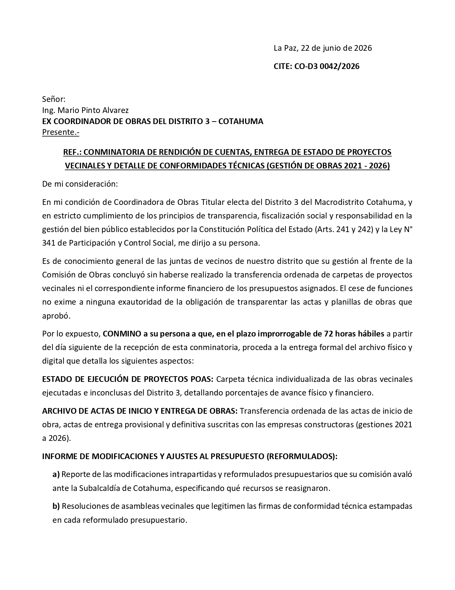
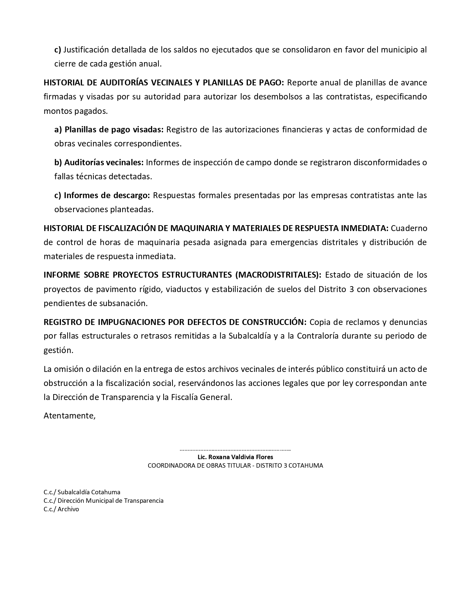

Caso: Conminatoria de Rendición de Cuentas
Manejo avanzado de sangrías, jerarquías de fuentes, espaciados y formato administrativo
Replicar la estructura formal de una carta administrativa de conminatoria de rendición de cuentas en Microsoft Word. El estudiante deberá configurar correctamente el tamaño de página, márgenes estrechos, jerarquías tipográficas, sangrías complejas (izquierda y de primera línea) para la fecha y el CITE, así como espaciados de párrafo e interlineados específicos para lograr una validación impecable de 1000 puntos.
Material de Trabajo
Descarga la plantilla base en formato Word para iniciar el ejercicio:
Instrucciones Paso a Paso
Paso 1: Configuración de Tamaño de Página Carta
Configura el tamaño del papel de la página a Carta (Letter):
- Abre el documento de plantilla de la tarea
Caso_Conminatoria_Tarea_Plantilla.docxen Microsoft Word. - Dirígete a la pestaña Disposición (o Formato en algunas versiones de Word).
- Haz clic en el botón Tamaño y selecciona Carta (o Letter).
Paso 2: Configuración de Márgenes de 2.0 cm
Configura los márgenes de página en sus cuatro lados a exactamente 2.0 cm:
- En la pestaña Disposición, haz clic en el botón Márgenes y selecciona Márgenes personalizados... al final del menú.
- En el cuadro de diálogo, introduce el valor 2,0 cm (o 2 cm) en los cuatro campos correspondientes: Superior, Inferior, Izquierdo y Derecho.
- Asegúrate de aplicar esta configuración a Todo el documento y presiona Aceptar.
Paso 3: Jerarquía de Fuentes (Calibri)
Aplica la tipografía oficial Calibri y establece la escala de tamaños del texto:
- Selecciona todo el documento usando la combinación de teclas
Ctrl + E. - En la pestaña Inicio, cambia la tipografía a Calibri y el tamaño de la fuente a 12 pt.
- Ahora, desplázate hasta el final del documento.
- Selecciona el bloque de firma (las líneas de puntos, el nombre
"Lic. Roxana Valdivia Flores"y su cargo) junto con las tres líneas de copias del pie de página (C.c./...). - Cambia el tamaño de fuente de estas líneas seleccionadas a exactamente 9 pt.
Paso 4: Sangría Izquierda de Fecha
Configura la sangría del párrafo de la fecha:
- Sitúa el cursor sobre el primer párrafo que contiene la fecha:
"La Paz, 22 de junio de 2026". - Asegúrate de que el párrafo esté alineado a la izquierda (en la pestaña Inicio, haz clic en Alinear a la izquierda o presiona
Ctrl + Q). - Haz clic derecho sobre el texto y selecciona Párrafo...
- En la sección de Sangría, cambia el valor de Izquierda a 11 cm (o escribe 11 cm).
- Presiona Aceptar.
Paso 5: Sangría Avanzada en CITE
Aplica sangría mixta (izquierda y de primera línea) para el párrafo de CITE:
- Coloca el cursor en el párrafo del CITE:
"CITE: CO-D3 0042/2026". - En la pestaña Inicio, asegúrate de que esté alineado a la izquierda.
- Haz clic derecho y selecciona Párrafo...
- En la sección de Sangría:
- Cambia el valor del campo Izquierda a 9,75 cm.
- En el menú desplegable de sangría Especial, selecciona Primera línea.
- En el campo En: introduce el valor 1,25 cm.
- Presiona Aceptar.
Paso 6: Formato del Bloque del Destinatario
Establece alineaciones, interlineado y espaciados de párrafo para las líneas de dirección:
- Selecciona las cuatro líneas correspondientes al destinatario (desde
"Señor:"hasta"Presente.-"). - Haz clic derecho sobre el bloque seleccionado y elige Párrafo...
- En la sección de Espaciado:
- Cambia el Interlineado a Sencillo.
- Cambia el espaciado Posterior a 0 pt.
- Presiona Aceptar.
- Selecciona únicamente la última línea de este bloque (
"Presente.-"). - Ve a la pestaña Disposición (o abre el cuadro de Párrafo...) y cambia su espaciado Posterior a exactamente 12 pt.
Paso 7: Línea de Referencia Centrada
Aplica negrita, subrayado y alineación centrada a la referencia:
- Selecciona el párrafo que comienza con
"REF.: CONMINATORIA DE RENDICIÓN...". - En la pestaña Inicio, haz clic en el botón Centrar (o presiona
Ctrl + T). - Aplica formato Negrita haciendo clic en el botón N (o presiona
Ctrl + N). - Aplica Subrayado simple haciendo clic en el botón S (o presiona
Ctrl + S).
Paso 8: Alineación y Espaciado del Cuerpo
Configura de manera uniforme el cuerpo del documento (saludo, párrafos de conminatoria, listas e incisos):
- Selecciona todos los párrafos de desarrollo de la carta (que abarcan desde
"De mi consideración:"y el párrafo"En mi condición de..."hasta el párrafo de cierre final que termina con"...y la Fiscalía General.") incluyendo también la palabra"Atentamente,". - En la pestaña Inicio, haz clic en el botón Justificar (o usa
Ctrl + J). - Abre el cuadro de diálogo Párrafo... (clic derecho > Párrafo...).
- En la sección de Espaciado:
- En el campo Interlineado, selecciona Múltiple e introduce el valor 1,25.
- En el campo Posterior, introduce exactamente 6 pt.
- Presiona Aceptar.
Paso 9: Negrita en Listas y Conminatorias
Resalta los títulos secundarios y frases importantes de la conminatoria:
- En el tercer párrafo del cuerpo, selecciona y aplica Negrita (
Ctrl + N) a la frase exacta:"CONMINO a su persona a que, en el plazo improrrogable de 72 horas hábiles". - Para cada uno de los elementos de la conminatoria, selecciona sus encabezados iniciales en mayúsculas y aplícales Negrita:
"ESTADO DE EJECUCIÓN DE PROYECTOS POAS:""ARCHIVO DE ACTAS DE INICIO Y ENTREGA DE OBRAS:""INFORME DE MODIFICACIONES Y AJUSTES AL PRESUPUESTO (REFORMULADOS):"- En el inciso a): la letra
"a)"y la frase"Modificaciones Presupuestarias e Intrapartidas (Reformulados)". - En el inciso b): la letra
"b)". - En el inciso c): la letra
"c)"y la palabra"bolsones". "HISTORIAL DE AUDITORÍAS VECINALES Y PLANILLAS DE PAGO:"- En el inciso a): la frase
"a) Planillas de pago visadas:". - En el inciso b): la frase
"b) Auditorías vecinales:". - En el inciso c): la frase
"c) Informes de descargo:". "HISTORIAL DE FISCALIZACIÓN DE MAQUINARIA Y MATERIALES DE RESPUESTA INMEDIATA:""INFORME SOBRE PROYECTOS ESTRUCTURANTES (MACRODISTRITALES):""REGISTRO DE IMPUGNACIONES POR DEFECTOS DE CONSTRUCCIÓN:"
Paso 10: Firma, Copias y Dobles Espacios
Centra la firma, mantén las copias a la izquierda y limpia los espacios extra del texto:
- Selecciona las tres líneas del bloque de firma final (la línea de puntos, el nombre
"Lic. Roxana Valdivia Flores"y el cargo"COORDINADORA DE OBRAS TITULAR..."). - En la pestaña Inicio, haz clic en el botón Centrar (o presiona
Ctrl + T). - Selecciona únicamente el nombre
"Lic. Roxana Valdivia Flores"y aplícale Negrita (Ctrl + N). - Asegúrate de que las tres líneas de copias del margen inferior izquierdo (
C.c./ Subalcaldía Cotahuma...) permanezcan alineadas a la Izquierda. - Abre la herramienta Buscar y reemplazar presionando
Ctrl + L. - En el campo Buscar, escribe dos espacios en blanco consecutivos.
- En el campo Reemplazar con, escribe un solo espacio en blanco.
- Haz clic en Reemplazar todos repetidamente hasta que el cuadro informe que se han realizado 0 reemplazos.
Guarda el archivo finalizado como P04-Conminatoria-TuNombre.docx y preséntalo para su validación (puntuación objetivo: 1000 puntos).
Resultado Esperado
El documento finalizado consta de dos páginas y debe verse similar a las siguientes imágenes:
Página 1

Página 2
